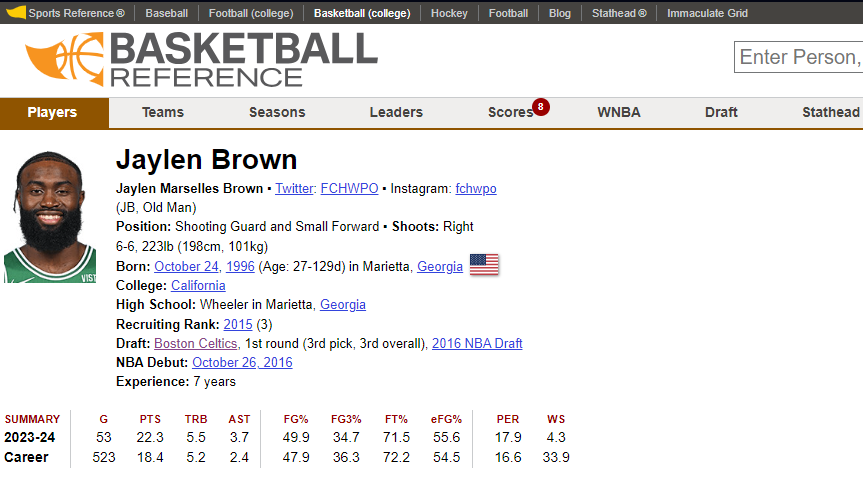

Slam Dunk Scraping
Basic Web Scraping of Basketball-Reference.com
2/29/2024
Description
In this project overview/tutorial, I'll be explaining how I was able to go through the ETL (Extract, Transform, Load) process to effectively pull data from Basketball-Reference. The motivation for this project is that I wanted something to teach me web scraping basics. I also am a huge basketball fan and want to see what kind of funny insights I can draw from compiling all this data. I plan to make another entry to this series to cover some of the insights I find and show off some data visualization. Once that's done I'll link it here.
Prerequisites
If you want to follow along you'll need the following:
- Python 3
- Pandas
- BeautifulSoup
- Basic Permissions to save .csv files
Goal
The goal of this overview is to show how to use BeautifulSoup to scrape data from Basketball-Reference. I'll be showing how to get player data, game data, and team data. I'll also show how to save the data to a .csv file for later use.
Getting Started with Basketball-Reference
In order to get any information using BeautifulSoup, we first need to understand how the directories work on Basketball-Reference.
On basketball refrence there are 4 main pieces of data needed to find most pages:
- Year: The year is represented by a 4 digit integer (ex. 2022)
- Player ID: The player ID is the first 5 letters of the player's last name, the first 2 letters of their first name and then a 2 digit number if there are any duplicates (ex. Jayson Tatum's Player ID is tatumja01).
- Team ID: Team IDs are the 3 letter abbreviation of the team (ex. BOS for the Celtics). I've provided a map of the team abbreviations below
#Map of team initials to team names
team_initials = {
"ATL": "Atlanta Hawks",
"BOS": "Boston Celtics",
"BRK": "Brooklyn Nets",
"CHO": "Charlotte Hornets",
"CHI": "Chicago Bulls",
"CLE": "Cleveland Cavaliers",
"DAL": "Dallas Mavericks",
"DEN": "Denver Nuggets",
"DET": "Detroit Pistons",
"GSW": "Golden State Warriors",
"HOU": "Houston Rockets",
"IND": "Indiana Pacers",
"LAC": "Los Angeles Clippers",
"LAL": "Los Angeles Lakers",
"MEM": "Memphis Grizzlies",
"MIA": "Miami Heat",
"MIL": "Milwaukee Bucks",
"MIN": "Minnesota Timberwolves",
"NOP": "New Orleans Pelicans",
"NYK": "New York Knicks",
"OKC": "Oklahoma City Thunder",
"ORL": "Orlando Magic",
"PHI": "Philadelphia 76ers",
"PHO": "Phoenix Suns",
"POR": "Portland Trail Blazers",
"SAC": "Sacramento Kings",
"SAS": "San Antonio Spurs",
"TOR": "Toronto Raptors",
"UTA": "Utah Jazz",
"WAS": "Washington Wizards"
}
Getting Player IDs
Since there can be duplicates of the first part of the player ID (harrito can be both Tony Harris and Tobias Harris) further confirmation needs to be done to get the proper player ID. An example player page is shown below:
So in order to get the proper player ID we need to:
- Convert the player's name to the proper format
- Iterate through the player pages until we find the correct player by matching the name or until the page 404s indicating we've reached the end of that name
- Add the name to a list if it matches
- Return the name(s) (Can be more than one if two players have the exact same name)
The function I've written below does this:
#Function to get player ID from a player name
def getPlayerIDFromName(player_name):
#First, convert the player name to the format used in the URL
#Get the first 5 letters of the last name and make it lowercase
last_name = player_name.split(" ")[-1]
last_name = last_name[:5].lower()
#Get the first 2 letters of the first name and make it lowercase
first_name = player_name.split(" ")[0]
first_name = first_name[:2].lower()
#Combine the two and add a 01 to the end
player_id = last_name + first_name + "01"
#Next we need to confirm that the player ID is valid
page = requests.get("https://www.basketball-reference.com/players/" + last_name[0] + "/" + player_id + ".html")
#If the page doesn't exist return None
if page.status_code == 404:
print("Player not found: " + player_name)
return None
player_ids = []
#Loop through the player IDs until we run out of names
while page.status_code != 404:
#If the page exists and the player name matches the original name, return the player ID
soup = BeautifulSoup(page.content, 'html.parser')
#The player name is thr first h1 tag
player_name = soup.find('h1').text
if player_name == player_name:
player_ids.append(player_id)
#Increment the player ID
player_id = player_id[:-2] + str(int(player_id[-2:]) + 1).zfill(2)
#Request the next page
page = requests.get("https://www.basketball-reference.com/players/" + last_name[0] + "/" + player_id + ".html")
return player_ids
Getting Game IDs
Game IDs are easier to get since they are all unique. To find the game IDs for a given year and team I wrote the following function:
#Returns an array of game IDs for a given team (3 letter string) and year (int)
def getGameIDsFromTeamYear(team_initials, year):
try:
#Go to the team's schedule page
url = "https://www.basketball-reference.com/teams/" + team_initials + "/" + str(year) + "_games.html"
page = requests.get(url)
soup = BeautifulSoup(page.content, 'html.parser')
#Find the table with the schedule and get all of the rows
table = soup.find('table')
rows = table.find_all('tr')
#Within the rows look for the class="center iz" data-stat="box_score_text" tag
#Each one will contain a link to the game which includes the game ID
game_ids = []
for row in rows:
game_id = row.find('td', {'data-stat': 'box_score_text'})
if game_id is not None:
game_id = game_id.find('a')
if game_id is not None:
#Each game ID is in the format '/boxscores/202310160BOS.html'
game_id = game_id['href']
#Remove the /boxscores/ and .html
game_id = game_id.split('/')[2]
game_id = game_id[:-5]
game_ids.append(game_id)
#We want to remove games that haven't been played yet
today = date.today()
today = today.strftime("%Y%m%d")
#Convert the game IDs to dates and remove the ones that haven't been played yet
game_dates = []
for game_id in game_ids:
game_date = game_id[:8]
game_dates.append(game_date)
#Remove the game IDs that haven't been played yet
game_ids = [game_ids[i] for i in range(len(game_ids)) if int(game_dates[i]) < int(today)]
return game_ids
except:
print("Error getting game IDs for team: " + team_initials + " " + str(year) + "\n\t" + url)
#See if the page that was requested redirects to a 429 page
if page.status_code == 429:
print("Error 429: Too many requests")
return []
Getting Player Stats
Great! So now that we have both the player and game IDs we can start scraping the data. I've written a function below to get a player's stats for a given year: